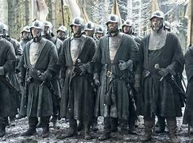
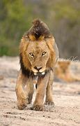
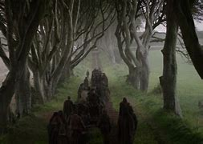

🛡️ Treinamento de Soldados
- Treine até 5.000 soldados a cada 8h, consumindo população e ouro.
- Padrão: baratos e seguros.
- Estilo Imaculado: leais, resistentes, mas com alto custo e risco.
- Infiltração: espiões e assassinos — exige inteligência alta do líder.
- Soldados podem se especializar após o treino (ex: arqueiro, cavaleiro).

🐺 Inteligência Artificial de Animais e Dragões
- Animais e criaturas mágicas têm IA própria.
- Reproduzem-se, interagem e evoluem sozinhos no mundo.
- Características herdadas dos pais (força, agilidade, defeitos).
- Eventos podem surgir deles, mesmo sem jogadores por perto.

👑 Soldados em Batalha
- Novatos podem fugir ou quebrar formação.
- Veteranos seguem ordens e resistem à pressão.
💀 Sistema de Boss
- Bosses aparecem em viagens ou em castelos.
- Podem ser monstros raros, generais ou bestas mágicas.
- Derrotá-los garante recompensas únicas.
🎁 Itens Perdidos
- Itens raros protegidos por armadilhas ou puzzles.
- 1 item anunciado por semana no mundo.
⛪ Problemas com a Fé
- Ignorar a fé local pode gerar revoltas ou ataques religiosos.
- Irmãos Pobres e Filhos do Guerreiro podem agir contra hereges,matar ou banir a fé é declarar guerra com todos os reinos.
🐲 Ovos de Dragão
- Casas valyrianas têm acesso a ovos.
- Exigem cuidados diários (temperatura, mestres).
- Dragões criados pelo jogador têm vínculo maior.
⚔️ PvP entre Jogadores
- Sistema de roleta: acerto, dano, esquiva.
- Leves: mais esquiva, menos dano.
- Pesados: menos esquiva, mais dano.
- Cenário influencia (chuva, lama, terreno).
🔥 PvP entre Dragões
- Roleta com variáveis extras (peso, histórico, clima).
- Conexão com o montador influencia controle e obediência.
💞 Conexão com o Dragão
- Voar, cuidar, lutar e interagir aumenta vínculo.
💰 Sistema de Venda
- Venda de recursos com risco de perdas.
- Escoltas armadas e guias podem ser contratados.
🔥 Sistema Targaryen
- Quem for Targaryen precisa criar também outro personagem de outra casa.
📅 Sistema de Eventos
- Combates, caçadas, adivinhações.
- Itens e bônus permanecem mesmo em novos personagens.
👨🌾 Sistema de Camponês
- Camponeses como ferreiros, mineradores, herbalistas.
- Podem gerar revoltas se houver crise.
🌧️ Sistema de Clima
- Chuva causa doenças, neve atrasa marchas, tempestades afetam navios.
- Lama afeta combate e movimentação.
⛰️ Eficiência por Terreno
- Montanha, lama, neve — cada um favorece ou dificulta algo.
- Tipo de armadura altera mobilidade e defesa.
🏰 Casas Não Controladas
- NPCs podem trair ou se rebelar se o lorde for ausente.
🤝 Fidelidade dos Soldados
- Soldados ignorados podem se corromper ou trair o lorde.
👥 Sistema de População
- Lordes carismáticos ganham apoio popular.
- Tiranos geram revoltas e assassinatos.
